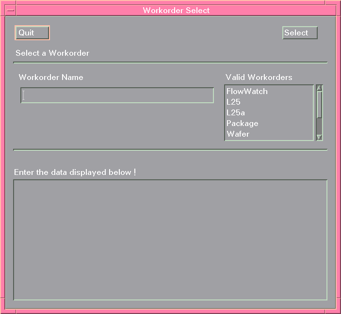
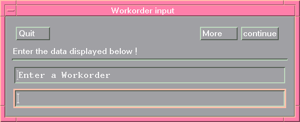

Displaying the Workorder Select Screen
If you would like to guide the Operator to enter the required workorder parameters one at a time (instead of a screen full of parameters), you can set the Workorder Select screen to Line Mode. This is controlled by the environment variable CONTROL_DEVICE. The command can easily be incorporated in the user's .vueprofile, for example. The figures below show the differences in screen appearances between MONITOR_SCREEN_MODE and MONITOR_LINE_MODE.


To display the workorder parameters in line mode do one of the following:
- Open a terminal and type
set CONTROL_DEVICE=MONITOR_LINE_MODE
export CONTROL_DEVICE
- include the lines
set CONTROL_DEVICE=MONITOR_LINE_MODE
export CONTROL_DEVICE
in the user's .vueprofile, and then start SmarTest.
Note By default, the CONTROL_DEVICE environment variable is set to MONITOR_SCREEN_MODE.